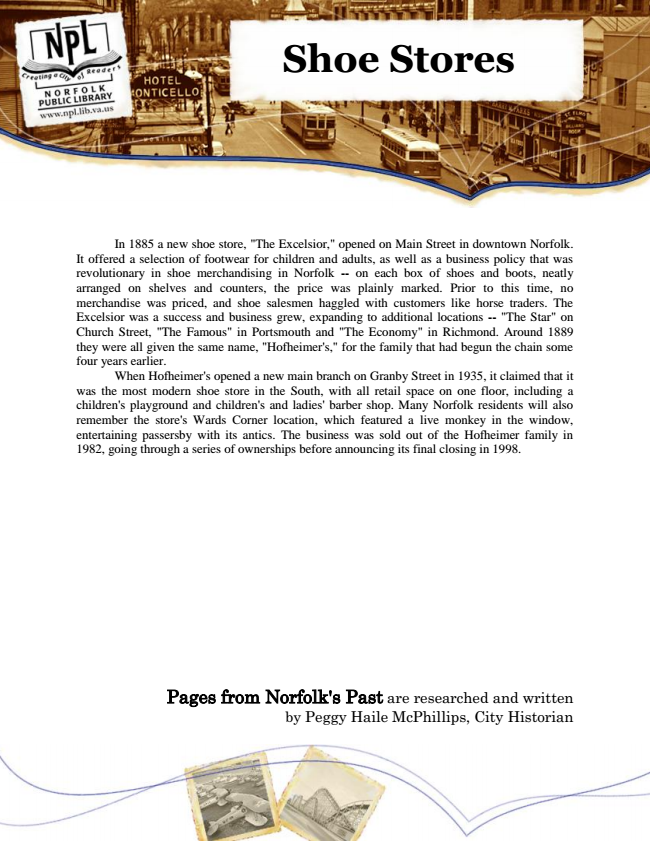

Shoe Stores
In 1885 a new shoe store, "The Excelsior," opened on Main Street in downtown Norfolk. It offered a selection of footwear for children and adults, as well as a business policy that was revolutionary in shoe merchandising in Norfolk -- on each box of shoes and boots, neatly arranged on shelves and counters, the price was plainly marked. Prior to this time, no merchandise was priced, and shoe salesmen haggled with customers like horse traders. The Excelsior was a success and business grew, expanding to additional locations -- "The Star" on Church Street, "The Famous" in Portsmouth and "The Economy" in Richmond. Around 1889 they were all given the same name, "Hofheimer's," for the family that had begun the chain some four years earlier.
When Hofheimer's opened a new main branch on Granby Street in 1935, it claimed that it was the most modern shoe store in the South, with all retail space on one floor, including a children's playground and children's and ladies' barber shop. Many Norfolk residents will also remember the store's Wards Corner location, which featured a live monkey in the window, entertaining passersby with its antics. The business was sold out of the Hofheimer family in 1982, going through a series of ownerships before announcing its final closing in 1998.
Pages from Norfolk's Past are researched and written by Peggy Haile McPhillips, City Historian